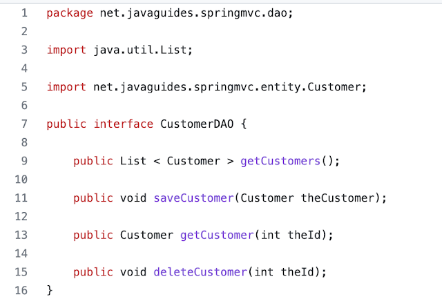
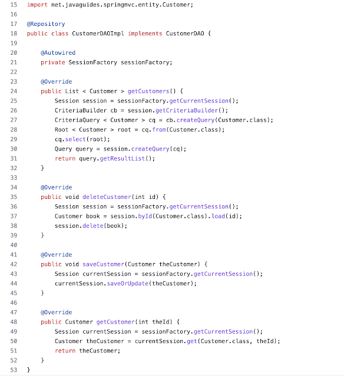
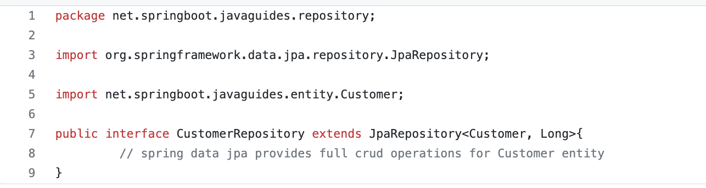
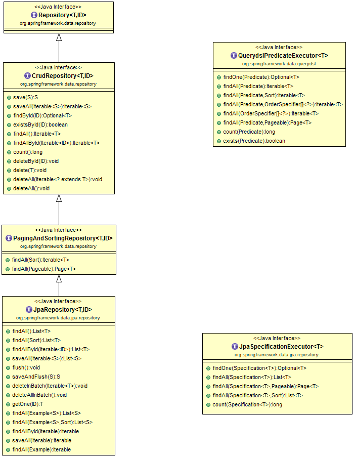

What is Spring Data JPA ?
In this tutorial, we will discuss what is Spring Data JPA and we will understand how can we use Spring Data JPA to reduce the boilerplate code required to implement the data access object (DAO) layer.
What Spring Data JPA?
Let's first understand what is the problem and how Spring Data JPA provides a solution to solve the problem.
Problem
In typical three-layer Spring application architecture, we create three layers - Controller, Service, and DAO/Repository layer.
If we use JPA/Hibernate then write a lot of code while implementing DAO layer:

For example, we typically write the below code to implement DAO for a single Employee entity:
CustomerDAO
CustomerDAOImpl
What if we create DAO for other entities like Student, Product, Order, Employee, etc.
We are writing a lot of code and repeating the same code for other entities (only the difference is entity type and primary key fields, the rest of the code remains the same).
What will be the solution to avoid redundant code (reduce boilerplate code)?
Solution
Spring Data JPA provides a solution to reduce a lot of boilerplate code.
Spring Data JPA provides an out-of-the-box implementation for all the required CRUD operations for the JPA entity so we don't have to write the same boilerplate code again and again.
Spring Data JPA provides repositories so we just need to extend them to get full the out-of-the-box implementation for CRUD operations for an entity.
For example:
Therefore, we can use Spring Data JPA to reduce the amount of boilerplate code required to implement the data access object (DAO) layer.
Spring Data JPA is not a JPA provider. It is a library/framework that adds an extra layer of abstraction on the top of our JPA provider (like Hibernate).
Spring Data JPA uses Hibernate as a default JPA provider.
Spring Data Commons and Spring Data JPA Repositories/interfaces
Let's quickly discuss important repositories or interfaces of Spring Data Commons and Spring Data JPA.
The below diagram shows the main interfaces from Spring Data Commons and Spring Data JPA modules.
Spring Data Commons is part of the umbrella Spring Data project that
provides shared infrastructure across
the Spring Data projects. It contains technology-neutral repository interfaces as well as a metadata model
for persisting Java classes.
Spring Data Commons project provides the following interfaces:
- Repository
- CrudRepository
- PagingAndSortingRepository
- QueryDslPredicateExecutor interface
Let's discuss the above interface in detail with its source code and methods.
The Repository interface
The Repository interface is a marker
interface that has two purposes:
- It captures the type of the managed entity and the type of the entity’s id.
- It helps the Spring container to discover the “concrete” repository interfaces during classpath scanning.
Let's look at the source code of the Repository interface.
package org.springframework.data.repository;
import org.springframework.stereotype.Indexed;
@Indexed
public interface Repository {
}
The CrudRepository interface
The CrudRepository interface provides CRUD
operations for the managed entity.
Let's look at the methods/APIs that the CrudRepository interface provides:
package org.springframework.data.repository;
import java.util.Optional;
@NoRepositoryBean
public interface CrudRepository < T, ID > extends Repository < T, ID > {
<S extends T> S save(S entity);
<S extends T> Iterable<S> saveAll(Iterable<S> entities);
Optional<T> findById(ID id);
boolean existsById(ID id);
Iterable<T> findAll();
Iterable<T> findAllById(Iterable<ID> ids);
long count();
void deleteById(ID id);
void delete(T entity);
void deleteAll();
}
Let's look at the usage of each method with a description.
long count()- Returns the number of entities available.void delete(T entity)- Deletes a given entity.void deleteAll()- Deletes all entities managed by the repository.void deleteAll(Iterable<? extends T> entities)- Deletes the given entities.void deleteById(ID id)- Deletes the entity with the given id.boolean existsById(ID id)- Returns whether an entity with the given id exists.Iterable findAll()- Returns all instances of the type.Iterable findAllById(Iterable ids)- Returns all instances of the type with the given IDs.Optional findById(ID id)- Retrieves an entity by its id.save(S entity)- Saves a given entity.Iterable saveAll(Iterable entities)- Saves all given entities.
The PagingAndSortingRepository interface
The PagingAndSortingRepository is an
extension of CrudRepository to
provide additional methods to retrieve entities using the pagination and sorting abstraction.
Let's look at the methods/APIs that the PagingAndSortingRepository interface
provides:
package org.springframework.data.repository;
import org.springframework.data.domain.Page;
import org.springframework.data.domain.Pageable;
import org.springframework.data.domain.Sort;
@NoRepositoryBean
public interface PagingAndSortingRepository < T, ID > extends CrudRepository < T, ID > {
/**
* Returns all entities sorted by the given options.
*
* @param sort
* @return all entities sorted by the given options
*/
Iterable < T > findAll(Sort sort);
/**
* Returns a {@link Page} of entities meeting the paging restriction provided in the {@code Pageable} object.
*
* @param pageable
* @return a page of entities
*/
Page < T > findAll(Pageable pageable);
}
The QueryDslPredicateExecutor interface
The QueryDslPredicateExecutor interface is not a “repository interface”. It
declares the methods that are
used to retrieve entities from the database by using QueryDsl Predicate
objects.
Let's look at the methods/APIs that the QueryDslPredicateExecutor interface
provides:
package org.springframework.data.querydsl;
import java.util.Optional;
import org.springframework.data.domain.Page;
import org.springframework.data.domain.Pageable;
import org.springframework.data.domain.Sort;
import com.querydsl.core.types.OrderSpecifier;
import com.querydsl.core.types.Predicate;
public interface QuerydslPredicateExecutor < T > {
Optional < T > findOne(Predicate predicate);
Iterable < T > findAll(Predicate predicate);
Iterable < T > findAll(Predicate predicate, Sort sort);
Iterable < T > findAll(Predicate predicate, OrderSpecifier << ? > ...orders);
Iterable < T > findAll(OrderSpecifier << ? > ...orders);
Page < T > findAll(Predicate predicate, Pageable pageable);
long count(Predicate predicate);
boolean exists(Predicate predicate);
}
Spring Data JPA Repository Interfaces
Spring Data JPA module deals with enhanced support for JPA-based data access
layers.
Spring Data JPA project provides the following interfaces:
- JpaRepository
- JpaSpecificationExecutor interface
JpaRepository interface
The JpaRepository interface is a JPA-specific
repository interface that combines
the methods declared by the common repository interfaces behind a single interface.
Let's look at the methods/APIs that the JpaRepository interface provides:
package org.springframework.data.jpa.repository;
import java.util.List;
import javax.persistence.EntityManager;
import org.springframework.data.domain.Example;
import org.springframework.data.domain.Sort;
import org.springframework.data.repository.NoRepositoryBean;
import org.springframework.data.repository.PagingAndSortingRepository;
import org.springframework.data.repository.query.QueryByExampleExecutor;
@NoRepositoryBean
public interface JpaRepository<T, ID> extends PagingAndSortingRepository<T, ID>, QueryByExampleExecutor<T> {
List<T> findAll();
List<T> findAll(Sort sort);
List<T> findAllById(Iterable<ID> ids);
<S extends T> List<S> saveAll(Iterable<S> entities);
void flush();
<S extends T> S saveAndFlush(S entity);
void deleteInBatch(Iterable<T> entities);
void deleteAllInBatch();
T getOne(ID id);
@Override
<S extends T> List<S> findAll(Example<S> example);
@Override
<S extends T> List<S> findAll(Example<S> example, Sort sort);
}
JpaSpecificationExecutor interface
The JpaSpecificationExecutor interface is not a “repository interface”. It
declares the methods that are used
to retrieve entities from the database by using Specification objects that use the JPA criteria API.
Let's look at the methods/APIs that the JpaSpecificationExecutor interface
provides:
package org.springframework.data.jpa.repository;
import java.util.List;
import java.util.Optional;
import org.springframework.data.domain.Page;
import org.springframework.data.domain.Pageable;
import org.springframework.data.domain.Sort;
import org.springframework.data.jpa.domain.Specification;
import org.springframework.lang.Nullable;
public interface JpaSpecificationExecutor {
Optional findOne(@Nullable Specification spec);
List findAll(@Nullable Specification spec);
Page findAll(@Nullable Specification spec, Pageable pageable);
List findAll(@Nullable Specification spec, Sort sort);
long count(@Nullable Specification spec);
}
Conclusion
In this tutorial, we have seen what is Spring Data JPA and how to reduce a boilerplate code to develop a DAO layer. We have also seen Spring Data and Spring Data JPA repository interfaces.